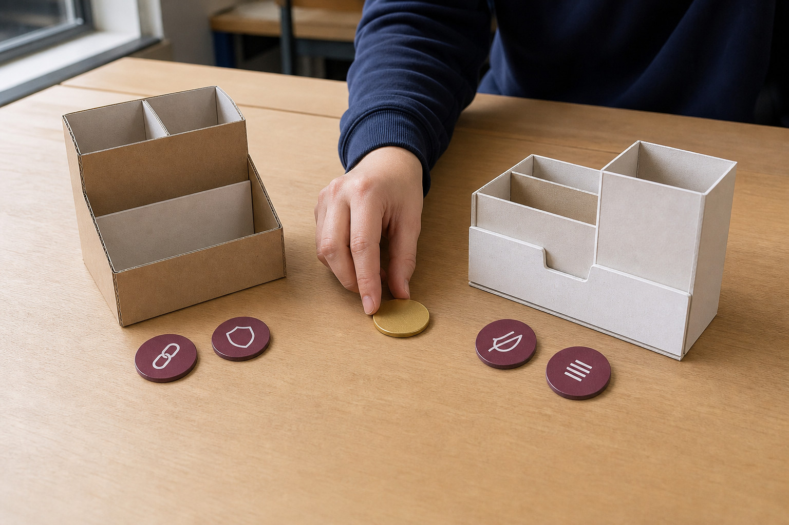
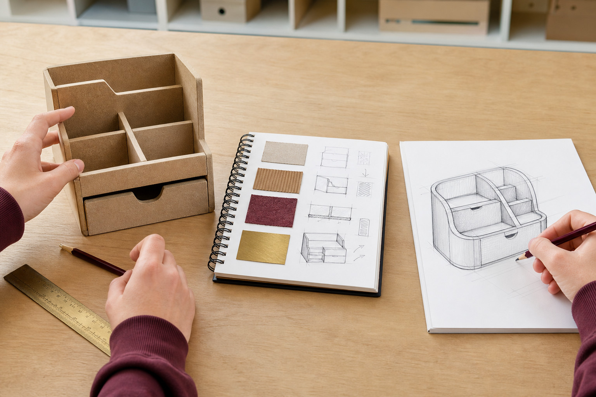
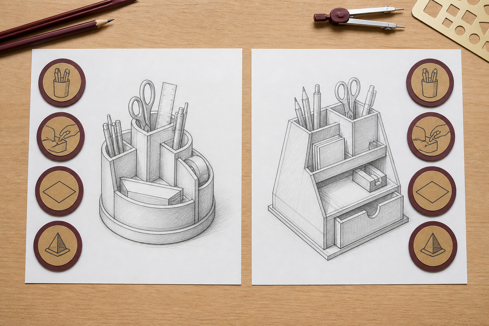
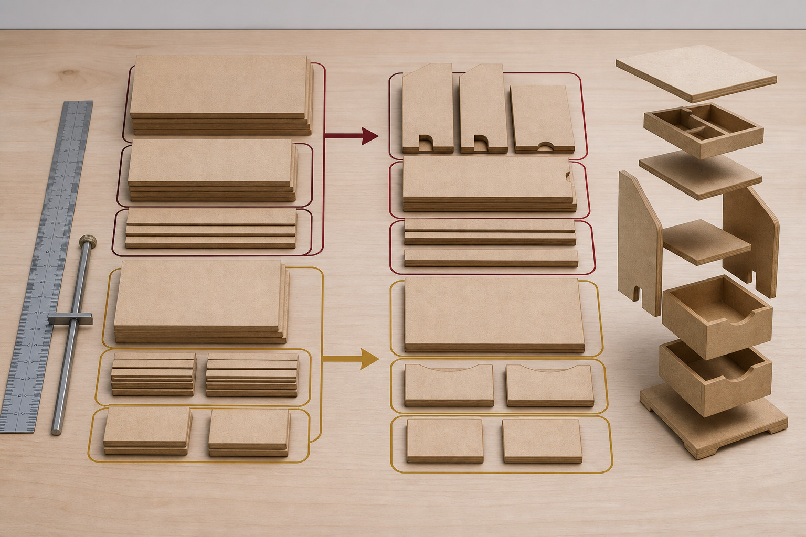
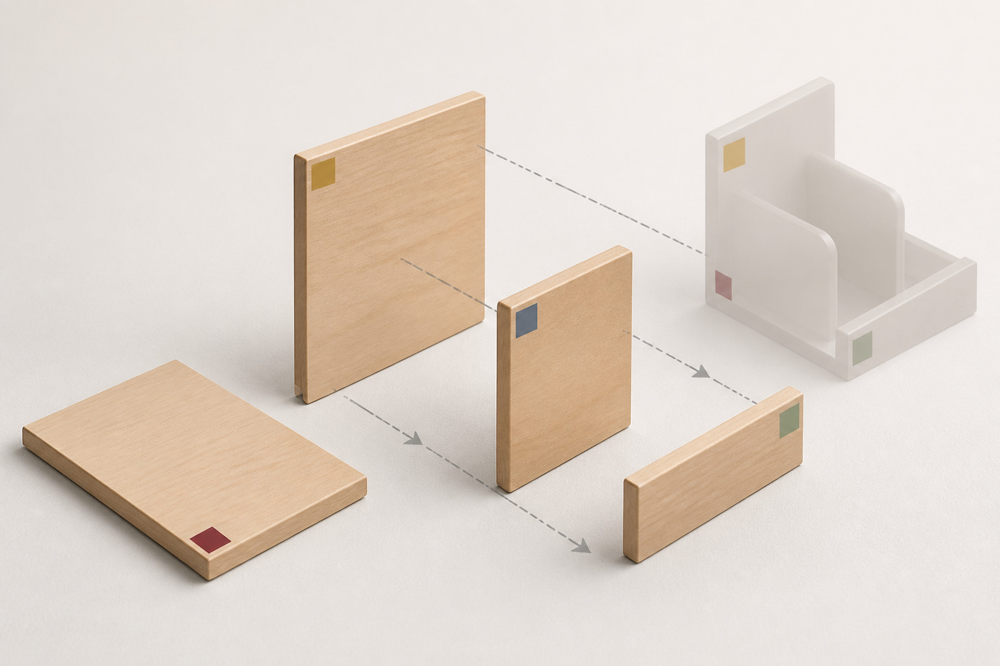
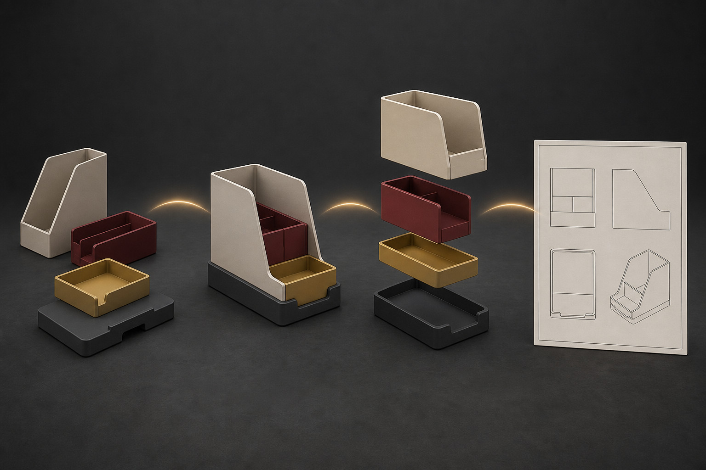
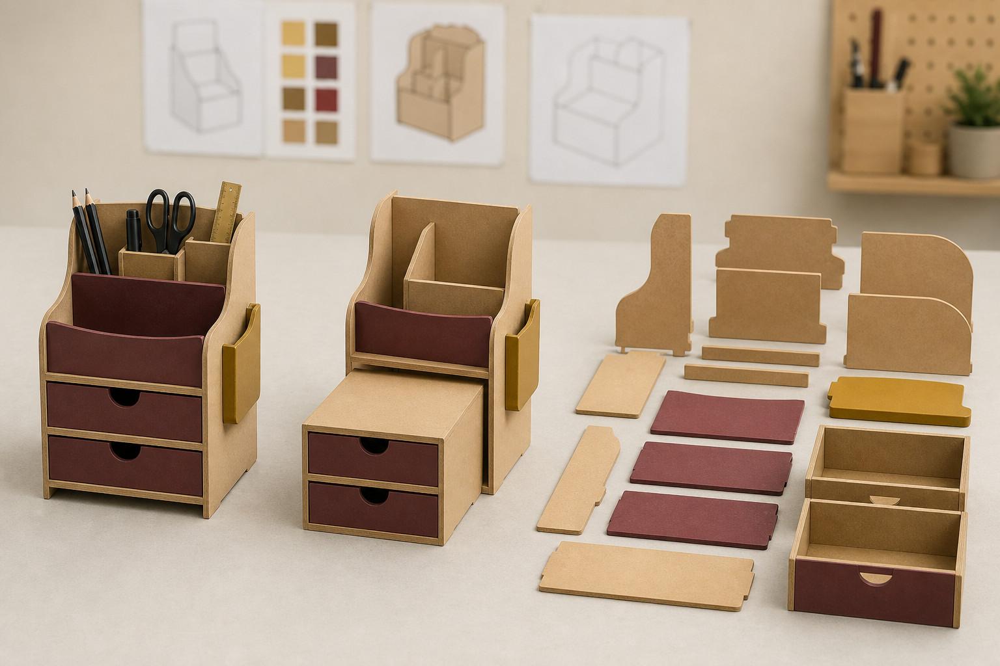
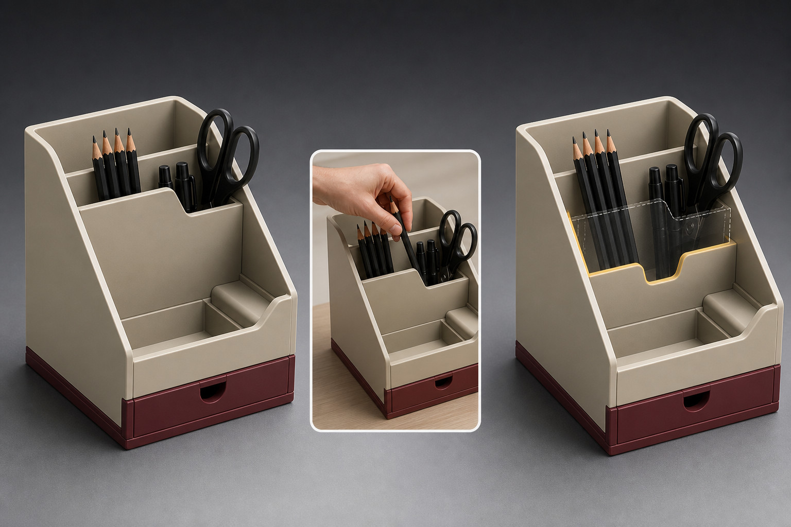
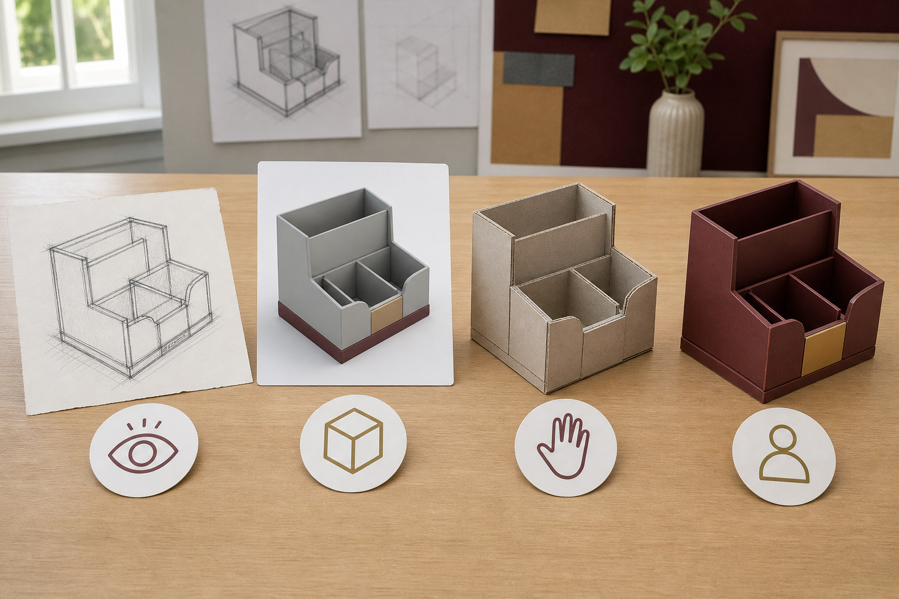
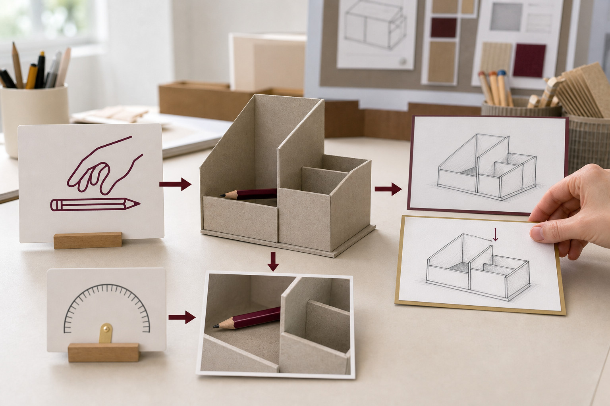

Classroom presentation
Module 3: Graphic Modelling and Prototyping
One editable eight-slide deck will teach this module's three named sections.
Download PowerPointModule 3
Use source-safe research and Onshape modelling to plan, test and explain a multi-part product concept without inventing local production facts.
Three section packages · browser-local progress
Classroom presentation
One editable eight-slide deck will teach this module's three named sections.
Download PowerPointSection 01
Use relevant product research to interpret a brief, develop alternatives and justify a concept choice.
Theory
Good graphics projects do not begin with detailed drawings or CAD. They begin by understanding a design problem. Before developing a product, a designer needs to investigate what users need, examine existing products, define what the proposed product should achieve and explore different possible solutions.
This early project work helps turn a general idea into a clear design direction. Research provides evidence, the brief defines the problem, the specification makes important requirements checkable, and concept development explores different ways the problem could be solved.
Product research involves examining existing products and other relevant information to learn from solutions that already exist. The aim is not to find something to copy. Research helps a designer recognise useful features, weaknesses, patterns and opportunities for improvement.
An important research skill is separating an observation from an inference. An observation is something that can actually be seen, measured or identified in the evidence. An inference is an interpretation made from that observation.
For example, imagine examining a desktop organiser. You might observe that it has three separate storage areas and a raised rear section. Those are visible features. You might then infer that the separate areas are intended to help users sort different objects, or that the raised section makes taller items easier to reach. These interpretations may be reasonable, but they are not automatically proven by appearance alone.
Strong research keeps the two ideas separate. A designer might write, “The product has three separate compartments” as an observation, followed by, “This may help users separate frequently used items” as an inference. Words such as may, could and suggests are useful when the evidence does not prove the interpretation.
Research becomes more useful when products are compared rather than examined in isolation. Two products designed for a similar purpose might organise objects differently, use different forms or place important features in different locations. Contrasting examples can reveal that there is rarely only one possible solution to a design problem.
A design brief is a concise statement describing what is to be designed, who it is for and what need or problem it should address. It gives the project direction without deciding every detail of the final solution.
A useful brief leaves room for design thinking. If the brief already specifies the exact shape, arrangement and appearance of the product, the solution has effectively been chosen before concepts have been explored.
A design specification turns the brief into clearer requirements that can later be checked. Specification points describe important expectations such as function, capacity, overall size limits, appearance, organisation, usability or compatibility with a particular context.
The brief and specification therefore have different jobs. The brief defines the overall design problem. The specification provides criteria and constraints that help guide and evaluate possible solutions.
A criterion is something used to judge how successfully a design performs. A constraint is a limit or condition within which the designer must work. For example, “provides organised storage for several types of desktop item” could be a criterion. “Must fit within the available desk space” is a constraint.
Useful specification points should be as checkable as practical. “Looks awesome” is difficult to judge consistently. “Uses a visually consistent form across its main parts” provides a clearer basis for comparison. Not every requirement needs a number, but each should give the designer a meaningful test for later decisions.
Once the problem and requirements are understood, designers generate concepts. A concept communicates a possible design direction. At this stage, sketches and annotations can communicate form, arrangement, function and important features without pretending that every detail has been resolved.
Good concept generation involves more than drawing the same idea several times with small cosmetic changes. Changing a corner shape, colour or decorative detail does not necessarily create a genuinely different solution. Different concepts should explore meaningful alternatives in areas such as arrangement, access, form, component relationships or the way the product performs its main function.
Annotations make concept sketches more informative. A short note can identify what a feature does, why it has been included or how it responds to a specification point. This makes the designer's thinking visible and provides information that can later support comparison and refinement.
Concepts do not need to be equally successful. Exploring a weaker idea can still be useful because comparison may reveal why another direction better meets the design requirements.
The following example is illustrative only. It is not the class project. Imagine a designer investigating a hypothetical multi-part desktop organiser for a user who wants frequently used stationery and small personal items kept together without creating a cluttered work area.
The starting need is organisation rather than a predetermined product shape: the user regularly uses several types of small desktop item and wants them stored neatly, separated where useful and easy to reach.
An illustrative brief could state: Design a compact, multi-part desktop organiser for a user who needs convenient storage for commonly used stationery and small personal items while maintaining an orderly work area.
Notice that the brief identifies the product, user and purpose but does not dictate exactly how the organiser must look.
From that brief, the designer might establish these illustrative requirements:
These points give the designer a common basis for developing and comparing concepts. They are deliberately illustrative rather than dimensions or requirements for a real class project.
Suppose the designer examines two hypothetical existing products. Product A has several small compartments arranged at one level. The observation is that objects can be separated into multiple areas. The designer infers that this arrangement may make sorting easy, although the number of divisions could reduce the space available for larger items.
Product B uses fewer storage areas but arranges them at different heights. The observation is that the rear storage area is raised above the front section. The designer infers that this may improve access to taller items, while also creating a more complex overall form.
The research does not prove which product is “best”. Instead, it provides evidence about two contrasting approaches: greater subdivision and layered access.
Concept 1: divided tray arrangement. This concept uses a broad, low form divided into several storage zones. An annotation might state, “Separate front compartments organise small frequently used items.” Another could identify a larger rear area intended for objects that do not fit the smaller divisions.
Concept 2: stepped modular arrangement. This concept uses several connected parts at different heights. An annotation might state, “Raised rear section separates taller items from lower front storage.” A second note could explain that the stepped arrangement creates clear functional zones.
These concepts differ in more than appearance. One prioritises a low, divided layout; the other explores vertical organisation and distinct levels.
A fair comparison uses the same criteria for each concept. Changing the criteria to favour a preferred idea makes the decision less reliable. A simple matrix can help organise the evidence.
| Criterion | Concept 1 | Concept 2 |
|---|---|---|
| Separates different items | Strong: several divided zones | Strong: distinct storage levels |
| Easy access | Good: low, open arrangement | Strong: raised rear improves visibility |
| Compact form | Strong: low arrangement | Good: uses height as well as desk area |
| Visual coherence | Good: repeated divisions | Strong: connected stepped form |
The words in this matrix are illustrative judgements, not measured facts. In a real design process, the designer should connect each judgement to available sketches, research, models or other evidence rather than assigning ratings without explanation.
A design decision is stronger when it explains why one concept should continue. Simply writing “I chose Concept 2 because I like it better” gives little evidence of design thinking.
An illustrative justification could be: Concept 2 will be developed because its stepped arrangement responds strongly to the requirement for easy access. Research Product B showed that storage areas can be arranged at different heights, and the concept applies this idea while keeping separate functional zones. Concept 1 may produce a lower and simpler overall form, so choosing Concept 2 involves a trade-off between vertical organisation and simplicity. On balance, improved access and clearer separation are more important for the identified user need.
This justification does three useful things: it names the chosen concept, connects the decision to evidence and criteria, and acknowledges a trade-off rather than pretending that the selected design is perfect.
Choosing a concept does not finish the design process. The selected direction can be refined through graphic modelling and prototyping. Drawings and models help communicate ideas, test relationships and identify changes before a final proposal is developed.
Later in the CAD pathway, Onshape can be used to develop more accurate digital geometry and communicate the selected design. Other graphic communication tasks may also use suitable vector, layout or image-editing tools, depending on the purpose. The important principle is to choose a representation that communicates the required information clearly.
Project management also continues throughout this process. Research, specifications, concept decisions and later modelling are connected stages rather than isolated tasks. Evidence gathered early in the project should influence later decisions, while new information from modelling may cause earlier ideas to be refined.
Purposeful visuals



Media pathway
Watch or read for: No video assigned. Reading focus: What evidence links a product observation to a brief criterion, and what would be an unsupported preference?
Use the reading and still-image pathway below; no video is required for this section.
Primary source: Communication Technology 7-10 Syllabus (2025) - Drawing systems contexts. Return to the theory explanation.
Applied Learning Activity
Test whether a preferred concept is actually supported by the brief and research.
Open the full activityFormative learning evidence
This browser-local record is not formal submission or teacher verification.
Higher-order capstone · justify
Section 02
Decompose a product into parts, organise dimensional records and build an Onshape assembly that communicates relationships.
Theory
A product that looks like one object is often made from several separate pieces. Technical graphics helps us identify those pieces, describe them clearly and show how they relate to one another. Good part naming and accurate lists also make it easier to move from a design idea to a CAD model, an assembly and a drawing without losing track of what each component is.
Several words used in product graphics sound similar, but they have different meanings.
These terms become especially useful in CAD because a single part can be modelled once and then used as one or more instances in an assembly. Onshape describes an Assembly as a structure containing part and subassembly instances.
To decompose a product means to mentally separate it into the components that make it up. This is useful before modelling because it helps you decide what should be treated as a separate part and how the parts will later relate in an assembly.
Imagine a hypothetical four-part desktop caddy. For this example only, the caddy contains a Base, Back, Divider and Front Lip. Those names are deliberately simple and consistent. Using one name for each component reduces confusion when the design moves from a list to a CAD model and then to a drawing.
A useful product hierarchy could therefore be read as: Desktop Caddy Assembly → Base + Back + Divider + Front Lip. If the product were much more complex, some groups of parts might first be organised into subassemblies. For this simple example, four individual parts are enough.
A cutting list describes the stock pieces that need to exist for manufacture. Its focus is the material pieces rather than the completed assembly structure. Dimensions, material descriptions and quantities are therefore important.
All dimensions, quantities and material choices in the following example are fictional and illustrative only. They are not dimensions or materials for a current school project.
| Piece | Illustrative material | Illustrative length | Illustrative width | Illustrative thickness | Illustrative quantity |
|---|---|---|---|---|---|
| Base | Illustrative 12 mm sheet material | Illustrative 240 mm | Illustrative 140 mm | Illustrative 12 mm | Illustrative 1 |
| Back | Illustrative 12 mm sheet material | Illustrative 240 mm | Illustrative 100 mm | Illustrative 12 mm | Illustrative 1 |
| Divider | Illustrative 12 mm sheet material | Illustrative 120 mm | Illustrative 80 mm | Illustrative 12 mm | Illustrative 1 |
| Front Lip | Illustrative 12 mm sheet material | Illustrative 240 mm | Illustrative 40 mm | Illustrative 12 mm | Illustrative 1 |
Notice the job of this list: it records information about the stock pieces. It answers questions such as, “What pieces are required?”, “What size is each piece?” and “How many are needed?” It does not need to explain how the pieces fit together.
A parts list or BOM has a different purpose. It records the components that belong to the product and their quantities. Some fields can overlap with a cutting list, but the documents are doing different jobs.
| Illustrative item | Component name | Illustrative quantity |
|---|---|---|
| 1 | Base | 1 |
| 2 | Back | 1 |
| 3 | Divider | 1 |
| 4 | Front Lip | 1 |
The cutting list and parts list both contain names and quantities, so they may look similar. The key difference is their purpose. The cutting list supports manufacture by recording stock-piece information. The parts list or BOM records the components and quantities that make up an assembly. A BOM may also contain information such as item numbers, part numbers and descriptions.
Onshape Assemblies provide BOM information based on the assembly and its instances. Onshape's standard BOM includes properties such as item number, quantity, part number and description, with other properties available depending on the setup.
An Onshape BOM should not automatically be treated as a school's cutting-list template. It is also not evidence by itself that a particular drawing template meets AS 1100 requirements. The purpose and required format of each document still need to be understood separately.
An Onshape Document can contain different types of tabs, including Part Studio, Assembly and Drawing tabs. This allows modelling, assembly organisation and technical drawing information to remain connected within the CAD pathway.
Follow the hypothetical component named Divider through that pathway:
This consistent naming creates a clear information trail. “Divider” means the same component when you read the list, find the part, inspect the Assembly instances and identify it on a drawing. In a larger product, an Assembly can also contain instances of complete subassemblies as well as individual parts.
An assembled CAD model shows the parts in their normal relationship. That can make some components difficult to see. An exploded view temporarily separates the component instances so the viewer can more easily understand which parts belong to the assembly and how they are positioned relative to one another.
For the desktop caddy, an exploded view could visually separate the Base, Back, Divider and Front Lip while still showing that they belong to one Desktop Caddy Assembly. The component we have followed throughout this example would still be identified as Divider. If item labels or BOM-linked identifiers were added in an appropriate drawing, the viewer could connect the visible Divider to its corresponding list entry.
In Onshape, exploded views are created from an Assembly, and an existing exploded view can be selected when inserting an assembly view into a Drawing. This means the exploded arrangement can become part of the drawing communication rather than existing only as a 3D model view.
The important idea is that each representation has a purpose. A Part Studio contains the modelled parts. An Assembly organises part and subassembly instances. A BOM records the components represented by that assembly. An exploded view helps communicate their relationships. A Drawing presents selected graphical information for an audience. Keeping component names consistent across these stages makes technical information much easier to read, check and communicate.
Purposeful visuals




Media pathway
Watch or read for: What information tells Onshape which part instance is present and how its relationship to another instance is controlled?
Use the reading and still-image pathway below; no video is required for this section.
Primary source: Assemblies. Return to the theory explanation.
Applied Learning Activity
Connect a part record to its role and relationship in an Onshape assembly.
Open the full activityFormative learning evidence
This browser-local record is not formal submission or teacher verification.
Higher-order capstone · justify
Section 03
Plan a source-safe prototype pathway, collect evidence against a test question and evaluate the next revision.
Theory
A design is not finished just because it looks complete on the screen. Designers need evidence that their ideas actually meet the needs identified in the design specification. Prototyping, testing and evaluation provide this evidence. They help you move from “I think this will work” to a decision supported by observations, measurements and useful feedback.
A strong prototype pathway follows a cycle: specification → test question → method → observable evidence → feedback → decision → revision → retest → evaluation. The important idea is that each stage has a purpose. Testing should not be something added at the end simply because a model has been completed.
A prototype is a model or representation created so that part of a design can be investigated. It does not always need to look exactly like the final product. Its level of detail, or fidelity, should match the evidence you need.
For example, if you only need to investigate the overall arrangement of several parts, a simple Onshape model may provide enough information. If you need to investigate whether intended items fit into spaces, the model needs enough dimensional accuracy to make that test meaningful. Adding realistic colours, textures or decorative details would not necessarily improve the evidence about fit.
This means the first question should not be “How detailed can I make my prototype?” It should be “What question does this prototype need to answer?” Extra detail can take time without producing better evidence.
A render can be useful for communicating appearance and helping people understand a design proposal. However, a render does not prove that a product will function correctly, can be manufactured successfully or will be safe. Those claims require appropriate evidence.
Testing begins with the design specification. A specification describes criteria that a successful design should meet. A designer can turn one of these criteria into a focused test question.
Imagine a hypothetical digital desktop organiser being developed in Onshape. The specification might require the organiser to hold its intended items so that they are easy for a user to access. It might also require an arrangement that appears stable and balanced in the model.
Instead of asking the vague question “Is my organiser good?”, the designer could ask more useful questions such as:
Each question points towards a different test method and different evidence. A question about fit requires evidence about fit. A question about access requires evidence from how a user interacts with or interprets the design. A digital model may help identify possible stability or balance concerns, but it cannot by itself prove the behaviour of a future physical product.
If a physical prototype or CAM process is later considered necessary, that decision belongs in the planning process. Students must follow the teacher's current approved instructions before any physical operation.
A useful test has a method that produces evidence you can observe, record and compare with a criterion. Evidence is stronger than a general impression because another person can understand what happened and why you made your decision.
For the digital desktop organiser, the designer could use representative digital forms for the intended items and check their relationship with the spaces in the Onshape model. The designer could also inspect different views to identify possible access problems or arrangements that appear poorly balanced.
The evidence might show that the intended items fit, but one item is partly blocked by another. That observation is more useful than writing “The design works well.” It identifies what was tested and what happened.
Good evidence can include observations, recorded results, screenshots, comparisons and clearly documented user responses. The type of evidence should match the test question. You do not need to collect everything possible; you need enough relevant evidence to make a reasonable decision.
User feedback can reveal problems that the designer has overlooked. However, feedback needs to be interpreted. A user suggestion is evidence about their experience or preference; it is not automatically the correct design solution.
Suppose a user examines the desktop-organiser proposal and comments, “The item at the back looks difficult to reach because the front section gets in the way.” This is useful because it relates directly to the access criterion.
The designer should consider this feedback alongside other evidence. If the model also shows that the rear item is partly obstructed from a normal viewing and access direction, the two pieces of evidence support the same concern. The designer now has a stronger reason to revise the arrangement.
Feedback such as “I don't like it” is much less useful unless the reason is identified. Designers can improve the quality of feedback by asking focused questions connected to the specification.
Before making an important change, preserve evidence of the earlier design so that you can compare the two states. In Onshape, the document's history records changes over time. Onshape also supports named versions, which can mark a particular state of a document for later reference. Onshape provides ways to compare states or versions of a design.
History and named versions are related tools, but they are not identical. History records the sequence of changes, while a named version deliberately identifies a particular document state. Choosing an appropriate way to preserve the before state makes later comparison clearer.
In the desktop-organiser example, the designer could create a clearly named version before revising the arrangement. The original evidence showed that the intended items fitted, but the rear item was partly obstructed and a user reported that it looked difficult to access.
A justified revision would be to change the relative arrangement of the compartments so the obstructed item has a clearer access path. This is stronger than changing something simply to make the model look different because the revision responds directly to recorded evidence and the original access criterion.
After revising the Onshape model, the designer repeats the relevant test. Retesting matters because a change that solves one problem can create another. The designer should again check fit, user access and any stability or balance concerns suggested by the model rather than assuming that the revision has succeeded.
Evaluation is a reasoned judgement based on evidence. It is not simply a description of the finished design, and it should not become a list of personal opinions. A useful evaluation returns to the original specification and asks how well the tested design meets its criteria.
For the desktop organiser, the designer might compare the before and revised states. The original state allowed the intended items to fit, but evidence showed that one item was obstructed. After the revision, the repeated test might show that the intended items still fit and that the previously obstructed item now has a clearer access path. The designer can therefore judge that the revision better meets the original user-access criterion.
That judgement is justified because there is a chain of reasoning:
A good evaluation also recognises limitations. For example, the digital model may suggest that the arrangement is more balanced, but this does not prove how a future physical product would behave. That remains a limitation of the available evidence and may identify a question for a later prototype or test.
This is why evaluation is not really the end of designing. Evidence may show that a criterion has been met, partly met or not met. It may also reveal a new question. Designers can then decide whether another revision and retest are worthwhile.
The complete pathway is therefore a cycle rather than a straight line: specification → test question → method → observable evidence → feedback → decision → revision → retest → evaluation. Strong designers do not try to prove that their first idea was right. They use appropriate prototypes and evidence to discover what should stay, what should change and what still needs to be investigated.
Purposeful visuals



Media pathway
Watch or read for: What must be decided about the recipient and intended use before an export option can be chosen responsibly?
Use the reading and still-image pathway below; no video is required for this section.
Primary source: Exporting Files. Return to the theory explanation.
Applied Learning Activity
Choose evidence that answers a focused prototype question.
Open the full activityFormative learning evidence
This browser-local record is not formal submission or teacher verification.
Higher-order capstone · evaluate
End-of-module review
Completion means the ten questions were checked and the capstone has text saved. It does not mean submission or a formal mark.